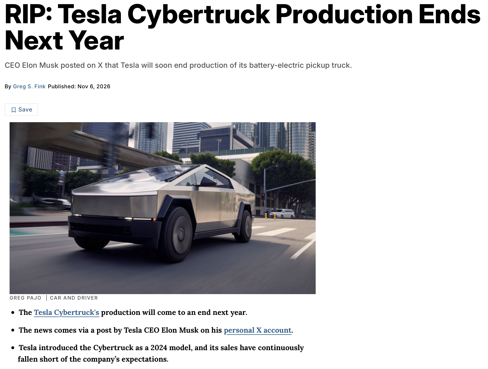

Tesla, Cybertruck 생산 2027년 중반쯤 종료 예정임.
Elon Musk가 본인 X 계정에서 생산 종료 계획 언급함.
판매량 계속 감소 중
- 2024년: 38,965대
- 2025년: 20,237대
- 2026년 1~3분기: 11,586대
초기 예상했던 연간 25만 대 수준에 크게 못 미침.
생산지를 다른 곳으로 옮길 가능성도 있지만, 판매 부진 때문에 사실상 단종될 가능성이 높아 보임.

Tesla, Cybertruck 생산 2027년 중반쯤 종료 예정임.
Elon Musk가 본인 X 계정에서 생산 종료 계획 언급함.
판매량 계속 감소 중
- 2024년: 38,965대
- 2025년: 20,237대
- 2026년 1~3분기: 11,586대
초기 예상했던 연간 25만 대 수준에 크게 못 미침.
생산지를 다른 곳으로 옮길 가능성도 있지만, 판매 부진 때문에 사실상 단종될 가능성이 높아 보임.
몇번 봤는데
흰색 번호판이라 인상 깊더라고
전기차인데 왜 흰색이지? 하고 궁금해서 검색하니까
화물이라서 흰색이라는데 우리나라 1톤 트럭 전기차들
파란색인데 저건 도데체 왜 흰색일까 하고 궁금함
화물이라서 흰색이아니고
구형번호판이라 흰색임
딸배하면서 동탄에서 딱 한대 봄 ㅋㅋㅋ 신기하게 생기긴 했는데 부자들 세컨이면 몰라도 딱 한대 사는걸 이걸로 사진 않는 느낌?
미니 버전에 뾰족한 모서리 디자인 좀 다듬고 한 7천에 내놓으면 잘 팔릴텐데
한국에서 타기엔 차가 너무 크고 위협적임
유럽은 아예 몰지도 못할듯 너무 커서 ㅋㅋㅋ 주차가 불가능해
와꾸가 쩌는거 대비 디메리트가 너무 많잖아. 사실 그에 비해 많이 팔린거지
겨울철 염화칼슘 많이 뿌리는 우리나라에서는 타기 힘든 차임ㅋ
사이버 트럭~( 테스라 톤으로 )
판교에서 한번 봤는데 주차 어떻게 하나 그생각부터 들더라 존나 커 ㅋㅋㅋ
일단 트럭주제에 ㅈㄴ 비싸
요즘 트럭 다 비싸긴 함
그럴차지..